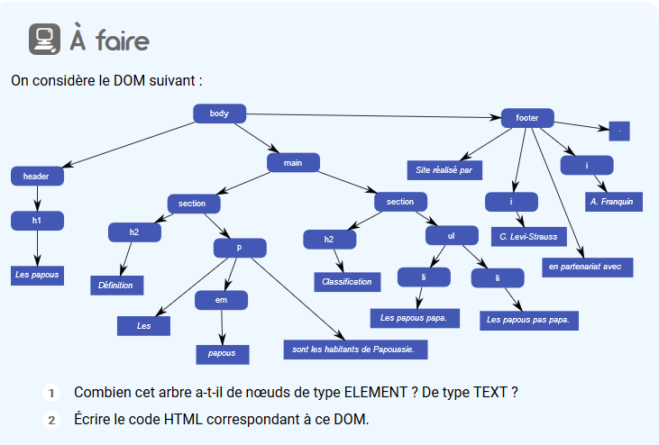
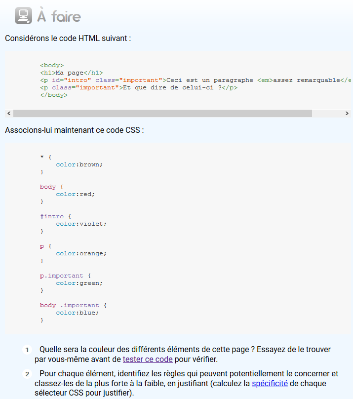

CSS3: Et la couleur fut !
Fonctionnement de CSS
À quoi correspond rgb(120, 56, 13) en hexadécimal ?
-
#78380d
Combien de couleurs chacune de ces trois méthodes (rgb, hexa ou nom de couleur) vous permettent d'obtenir ?
-
La méthode nom de couleur permet d'obtenir jusqu'à 140 couleurs.
La méthode RGB permet d'obtenir 16 777 216 couleurs car cette méthode possède des niveaux de rouge, vert et bleu et chaque niveau est codé par un nombre allant de 0 à 255.
La méthode HEXA permet d'obtenir 16 777 216 couleurs, soit 256^3 combinaisons de couleurs possibles. Chaque valeur de couleur RR, GG et BB contient 56 valeurs différentes, allant de 00 à FF.
224 = 16 777 216 (Environ 16 Millions)
Comparez en quelques lignes ces méthodes (avantages / inconvénients).
-
Les couleurs quantifiées par leur nom ne sont pas nombreuses à être valide. Par ailleurs, le hexadecimal et le décimal proposent le même nombre de couleurs, mais l'hexadecimal peut aussi se représenter sur 4 octet, ce qui permet donc d'obtenir plus de couleur.
Enfin, on peut dire que la méthode rgb() est plus lisible pour un humain
Noeuds Parents Fils
Combien cet arbre a-t-il de nœuds de type ELEMENT ? De type TEXT ?
16 noeuds de type ELEMENT. 13 noeuds de type TEXT. Pour un total de 29 Noeuds
Écrire le code HTML correspondant à ce DOM.
-
<!DOCTYPE html> <html lang="fr"> <head> <meta charset="UTF-8"> <link rel="stylesheet" type="text/css" href="../css/td.css" /> <title> Mon TD N°1 </title> </head> <body> <header> <h1>Les papous</h1> </header> <main> <section> <h2>Définition</h2> <p>Les <em>papous</em> sont les habitants de Papouasie.</p> </section> <section> <h2>Classification</h2> <ul> <li>Les papous papa.</li> <li>Les papous pas papa.</li> </ul> </section> </main> <footer> Site réalisé par <i>A.Franquin</i> en partenariat avec <i>G. Levi-Strauss</i> . </footer> </body> </html>
Quel code CSS peut-on écrire pour, sans toucher au code HTML (pas de classe ou d'identifiant !), mettre un fond rouge à « châtaignes » et un fond cyan à « couverture » (sans changer le reste) ?
-
li + li + li + li em { background-color: red; } -
body > ul > li + li em { background-color: cyan; }
Proposez une feuille de style qui attribue une couleur différent aux liens selon qu'il s'agisse :
Changez la couleur de vos titres lorsqu'ils sont survolés avec la souris.
Quelle est la différence entre p:hover et p :hover ?
-
p:hover ciblera le paragraphe p de la page lorsqu'il est survolées.
p :hover tous les p de la page sont survolés et tous ce qui est à l'intérieur
Modifiez votre feuille de style pour que, pour chaque citation, il y ait des guillemets colorés avant et
après la citation.
Profitez-en pour appliquer un fond coloré à chaque citation.
-
Citation 1
Citation 2
Citation 3
Considérons le code HTML suivant:
-
L'élément "Ma page" sera en rouge
l'élément "Ceci est un paragraphe sera en rose
l'élément "assez remarquable." sera en marron et en italique
l'élément "Et que dire de celui-ci ?" sera en bleu. -
Solution :
Pour chaque élément, identifiez les règles qui peuvent potentiellement le concerner et classez-les de la plus forte à la faible, en justifiant (calculez la spécificité de chaque sélecteur CSS pour justifier).
-
-
#intro: (1, 0, 0) est un identifiant et il est le sélecteur qui a la plus grande spécificité. Il doit donc être placé en premier.
-
La classe et balise
p.important: (0, 1, 1) est le second sélecteur ayant la plus grande spécificité en raison de sa classe et de son elementp.
-
Vient par la suite
body .important: (0, 1, 1), qui lui possède une classe et un élémentbody.
-
La balise
body: (0, 0, 1) se place en quatrième position en terme de spécificité puisqu'il ne contient qu'un seul élément.
-
De même pour la balise
p: (0, 0, 1) qui ne correspond qu'à un élement.
-
Enfin, en dernière position, on retrouve la balise
*: (0, 0, 0).
-
Ainsi, tous ces sélecteurs ont été classé du plus important au moins important en respectant
les règles : identifiant > classe > balises.
-
-
#intro->p.important->body .important->body->p->*